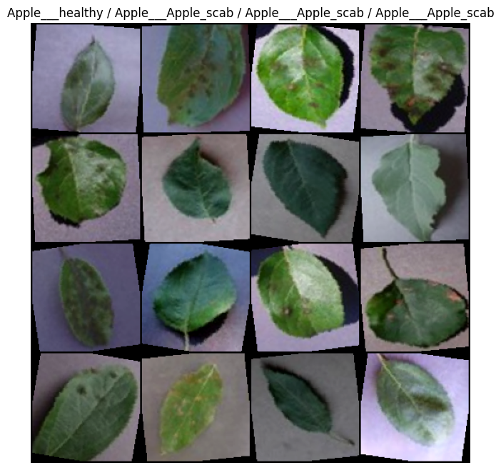
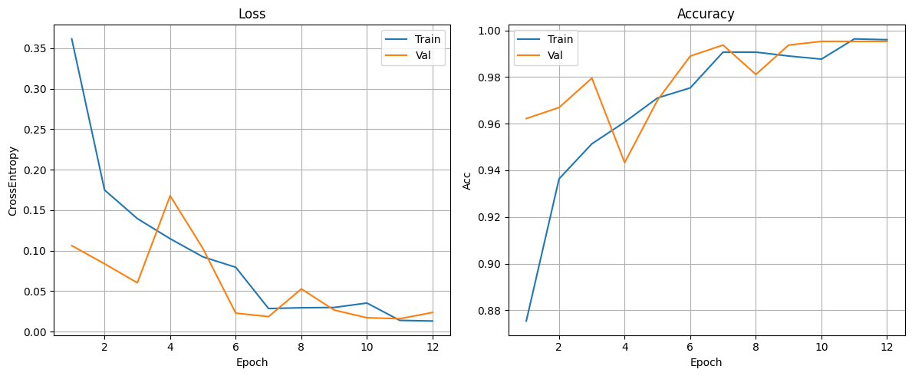
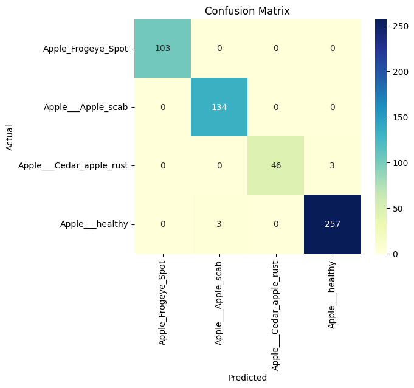
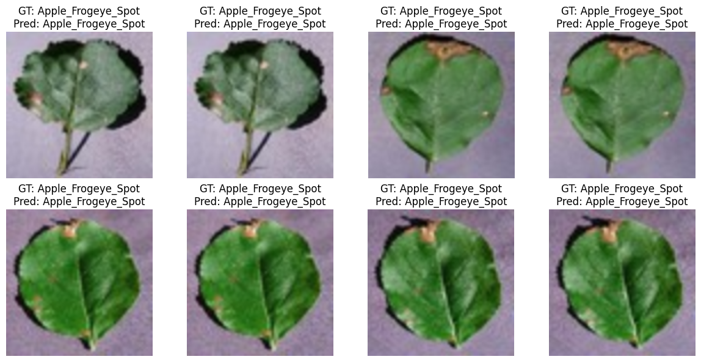

Aim: Design a CNN architecture to implement the image classification task over an image dataset. Perform the Hyper-parameter tuning and record the results.
Pratham Goyal A2345924079 4CSE-2eve
!pip install wandb
import wandb
from dotenv import load_dotenv
import os
load_dotenv('/kaggle/input/environment-variable/.env')
print(f"API key found in environment? {os.getenv('WANDB_API_KEY') is not None}")
# wandb.login()
if wandb.login():
print("Successfully logged in to Weights & Biases!")
else:
print("Failed to log in to Weights & Biases. Check your API key in the .env file.")Requirement already satisfied: wandb in /usr/local/lib/python3.12/dist-packages (0.22.2)
Requirement already satisfied: click>=8.0.1 in /usr/local/lib/python3.12/dist-packages (from wandb) (8.3.1)
Requirement already satisfied: gitpython!=3.1.29,>=1.0.0 in /usr/local/lib/python3.12/dist-packages (from wandb) (3.1.45)
Requirement already satisfied: packaging in /usr/local/lib/python3.12/dist-packages (from wandb) (26.0rc2)
Requirement already satisfied: platformdirs in /usr/local/lib/python3.12/dist-packages (from wandb) (4.5.1)
Requirement already satisfied: protobuf!=4.21.0,!=5.28.0,<7,>=3.19.0 in /usr/local/lib/python3.12/dist-packages (from wandb) (5.29.5)
Requirement already satisfied: pydantic<3 in /usr/local/lib/python3.12/dist-packages (from wandb) (2.12.5)
Requirement already satisfied: pyyaml in /usr/local/lib/python3.12/dist-packages (from wandb) (6.0.3)
Requirement already satisfied: requests<3,>=2.0.0 in /usr/local/lib/python3.12/dist-packages (from wandb) (2.32.5)
Requirement already satisfied: sentry-sdk>=2.0.0 in /usr/local/lib/python3.12/dist-packages (from wandb) (2.42.1)
Requirement already satisfied: typing-extensions<5,>=4.8 in /usr/local/lib/python3.12/dist-packages (from wandb) (4.15.0)
Requirement already satisfied: gitdb<5,>=4.0.1 in /usr/local/lib/python3.12/dist-packages (from gitpython!=3.1.29,>=1.0.0->wandb) (4.0.12)
Requirement already satisfied: annotated-types>=0.6.0 in /usr/local/lib/python3.12/dist-packages (from pydantic<3->wandb) (0.7.0)
Requirement already satisfied: pydantic-core==2.41.5 in /usr/local/lib/python3.12/dist-packages (from pydantic<3->wandb) (2.41.5)
Requirement already satisfied: typing-inspection>=0.4.2 in /usr/local/lib/python3.12/dist-packages (from pydantic<3->wandb) (0.4.2)
Requirement already satisfied: charset_normalizer<4,>=2 in /usr/local/lib/python3.12/dist-packages (from requests<3,>=2.0.0->wandb) (3.4.4)
Requirement already satisfied: idna<4,>=2.5 in /usr/local/lib/python3.12/dist-packages (from requests<3,>=2.0.0->wandb) (3.11)
Requirement already satisfied: urllib3<3,>=1.21.1 in /usr/local/lib/python3.12/dist-packages (from requests<3,>=2.0.0->wandb) (2.6.3)
Requirement already satisfied: certifi>=2017.4.17 in /usr/local/lib/python3.12/dist-packages (from requests<3,>=2.0.0->wandb) (2026.1.4)
Requirement already satisfied: smmap<6,>=3.0.1 in /usr/local/lib/python3.12/dist-packages (from gitdb<5,>=4.0.1->gitpython!=3.1.29,>=1.0.0->wandb) (5.0.2)
/usr/local/lib/python3.12/dist-packages/pydantic/_internal/_generate_schema.py:2249: UnsupportedFieldAttributeWarning: The 'repr' attribute with value False was provided to the `Field()` function, which has no effect in the context it was used. 'repr' is field-specific metadata, and can only be attached to a model field using `Annotated` metadata or by assignment. This may have happened because an `Annotated` type alias using the `type` statement was used, or if the `Field()` function was attached to a single member of a union type.
warnings.warn(
/usr/local/lib/python3.12/dist-packages/pydantic/_internal/_generate_schema.py:2249: UnsupportedFieldAttributeWarning: The 'frozen' attribute with value True was provided to the `Field()` function, which has no effect in the context it was used. 'frozen' is field-specific metadata, and can only be attached to a model field using `Annotated` metadata or by assignment. This may have happened because an `Annotated` type alias using the `type` statement was used, or if the `Field()` function was attached to a single member of a union type.
warnings.warn(
API key found in environment? True
wandb: Currently logged in as: prathamgoyal7411 (v8god-01) to https://api.wandb.ai. Use `wandb login --relogin` to force relogin
Successfully logged in to Weights & Biases!
End-to-end PyTorch pipeline for multi-class leaf disease detection using transfer learning (ResNet18). This notebook covers data loading, visualization, model training, evaluation, and inference with clean explanations and code comments.
torch, torchvisionoptim, nn,
DataLoadersklearn,
matplotlibimport os, random, time
import numpy as np
import torch
import torch.nn as nn
import torch.optim as optim
from torch.utils.data import DataLoader
import torchvision
from torchvision import datasets, transforms, models
import matplotlib.pyplot as plt
from sklearn.metrics import classification_report, confusion_matrix
import seaborn as sns
# Reproducibility
SEED = 42
random.seed(SEED)
np.random.seed(SEED)
torch.manual_seed(SEED)
torch.cuda.manual_seed_all(SEED)
device = torch.device("cuda" if torch.cuda.is_available() else "cpu")
print(f"Using device: {device}")Using device: cpu
train/, val/,
test/#from google.colab import drive
#drive.mount('/content/drive')!pwd/kaggle/working
# Update the base directory if your data lives elsewhere
data_root = "/kaggle/input/plant-1/Data/plant_village_dataset"
train_dir = os.path.join(data_root, "train")
val_dir = os.path.join(data_root, "val")
test_dir = os.path.join(data_root, "test")
img_size = 128
batch_size = 32
num_workers = 2
train_tfms = transforms.Compose([
transforms.Resize((img_size, img_size)),
transforms.RandomHorizontalFlip(),
transforms.RandomVerticalFlip(),
transforms.ColorJitter(brightness=0.2, contrast=0.2, saturation=0.2),
transforms.RandomRotation(10),
transforms.ToTensor(),
transforms.Normalize(mean=[0.485, 0.456, 0.406], std=[0.229, 0.224, 0.225])
])
eval_tfms = transforms.Compose([
transforms.Resize((img_size, img_size)),
transforms.ToTensor(),
transforms.Normalize(mean=[0.485, 0.456, 0.406], std=[0.229, 0.224, 0.225])
])
train_ds = datasets.ImageFolder(train_dir, transform=train_tfms)
val_ds = datasets.ImageFolder(val_dir, transform=eval_tfms)
test_ds = datasets.ImageFolder(test_dir, transform=eval_tfms)
class_names = train_ds.classes
num_classes = len(class_names)
print(f"Classes: {class_names}")
train_loader = DataLoader(train_ds, batch_size=batch_size, shuffle=True, num_workers=num_workers, pin_memory=True)
val_loader = DataLoader(val_ds, batch_size=batch_size, shuffle=False, num_workers=num_workers, pin_memory=True)
test_loader = DataLoader(test_ds, batch_size=batch_size, shuffle=False, num_workers=num_workers, pin_memory=True)
print(f"Train/Val/Test sizes: {len(train_ds)}, {len(val_ds)}, {len(test_ds)}")Classes: ['Apple_Frogeye_Spot', 'Apple___Apple_scab', 'Apple___Cedar_apple_rust', 'Apple___healthy']
Train/Val/Test sizes: 3002, 635, 546
Visualize a few samples with labels to sanity-check the pipeline.
def imshow_batch(batch, labels):
inv_norm = transforms.Normalize(
mean=[-m/s for m, s in zip([0.485,0.456,0.406],[0.229,0.224,0.225])],
std=[1/s for s in [0.229,0.224,0.225]]
)
imgs = inv_norm(batch).clamp(0,1)
grid = torchvision.utils.make_grid(imgs, nrow=4)
plt.figure(figsize=(8,8))
plt.imshow(np.transpose(grid.numpy(), (1,2,0)))
plt.title(" / ".join([class_names[l] for l in labels[:4]]))
plt.axis('off')
plt.show()
sample_imgs, sample_lbls = next(iter(train_loader))
imshow_batch(sample_imgs[:16], sample_lbls[:16])/usr/local/lib/python3.12/dist-packages/torch/utils/data/dataloader.py:666: UserWarning: 'pin_memory' argument is set as true but no accelerator is found, then device pinned memory won't be used.
warnings.warn(warn_msg)

num_classesweights = models.ResNet18_Weights.DEFAULT
model = models.resnet18(weights=weights)
in_features = model.fc.in_features
model.fc = nn.Sequential(
nn.Dropout(p=0.3),
nn.Linear(in_features, num_classes)
)
model = model.to(device)
print(model.fc)Downloading: "https://download.pytorch.org/models/resnet18-f37072fd.pth" to /root/.cache/torch/hub/checkpoints/resnet18-f37072fd.pth
100%|██████████| 44.7M/44.7M [00:00<00:00, 144MB/s]Sequential(
(0): Dropout(p=0.3, inplace=False)
(1): Linear(in_features=512, out_features=4, bias=True)
)
criterion = nn.CrossEntropyLoss()
optimizer = optim.Adam(model.parameters(), lr=1e-3, weight_decay=1e-4)
scheduler = optim.lr_scheduler.StepLR(optimizer, step_size=5, gamma=0.5)
num_epochs = 12
best_val_acc = 0.0
BATCH_SIZE = train_loader.batch_size # safest
LR = 1e-3
history = {"train_loss": [], "val_loss": [], "train_acc": [], "val_acc": []}
wandb.init(
project="exercise-5",
name="Adam-run",
config={
"epochs": num_epochs,
"batch_size": BATCH_SIZE,
"learning_rate": LR,
"optimizer": "Adam",
"model": "MyModel"
}
)
wandb.watch(model, log="all", log_freq=10)
def run_epoch(loader, train_mode=True):
model.train(train_mode)
epoch_loss, correct, total = 0.0, 0, 0
for imgs, labels in loader:
imgs, labels = imgs.to(device), labels.to(device)
with torch.set_grad_enabled(train_mode):
outputs = model(imgs)
loss = criterion(outputs, labels)
if train_mode:
optimizer.zero_grad()
loss.backward()
optimizer.step()
epoch_loss += loss.item() * imgs.size(0)
preds = outputs.argmax(1)
correct += (preds == labels).sum().item()
total += labels.size(0)
return epoch_loss / total, correct / total
start = time.time()
for epoch in range(num_epochs):
train_loss, train_acc = run_epoch(train_loader, train_mode=True)
val_loss, val_acc = run_epoch(val_loader, train_mode=False)
scheduler.step()
wandb.log({
"train_loss": train_loss,
"train_accuracy": train_acc,
"val_loss": val_loss,
"val_accuracy": val_acc,
"epoch": epoch
})
history["train_loss"].append(train_loss)
history["val_loss"].append(val_loss)
history["train_acc"].append(train_acc)
history["val_acc"].append(val_acc)
if val_acc > best_val_acc:
best_val_acc = val_acc
torch.save(model.state_dict(), "best_resnet18.pth")
print(f"Epoch {epoch+1}/{num_epochs} | Train Loss: {train_loss:.4f} Acc: {train_acc:.3f} | Val Loss: {val_loss:.4f} Acc: {val_acc:.3f}")
print(f"Training finished in {(time.time()-start)/60:.1f} min. Best val acc: {best_val_acc:.3f}")
# Load best weights
model.load_state_dict(torch.load("best_resnet18.pth", map_location=device))wandb: setting up run t2eackyk
wandb: Tracking run with wandb version 0.22.2
wandb: Run data is saved locally in /kaggle/working/wandb/run-20260208_112922-t2eackyk
wandb: Run `wandb offline` to turn off syncing.
wandb: Syncing run Adam-run
wandb: ⭐️ View project at https://wandb.ai/v8god-01/exercise-5
wandb: 🚀 View run at https://wandb.ai/v8god-01/exercise-5/runs/t2eackyk
Epoch 1/12 | Train Loss: 0.3615 Acc: 0.875 | Val Loss: 0.1061 Acc: 0.962
Epoch 2/12 | Train Loss: 0.1748 Acc: 0.936 | Val Loss: 0.0837 Acc: 0.967
Epoch 3/12 | Train Loss: 0.1395 Acc: 0.951 | Val Loss: 0.0602 Acc: 0.980
Epoch 4/12 | Train Loss: 0.1146 Acc: 0.961 | Val Loss: 0.1677 Acc: 0.943
Epoch 5/12 | Train Loss: 0.0922 Acc: 0.971 | Val Loss: 0.1025 Acc: 0.970
Epoch 6/12 | Train Loss: 0.0794 Acc: 0.975 | Val Loss: 0.0227 Acc: 0.989
Epoch 7/12 | Train Loss: 0.0284 Acc: 0.991 | Val Loss: 0.0184 Acc: 0.994
Epoch 8/12 | Train Loss: 0.0294 Acc: 0.991 | Val Loss: 0.0526 Acc: 0.981
Epoch 9/12 | Train Loss: 0.0297 Acc: 0.989 | Val Loss: 0.0266 Acc: 0.994
Epoch 10/12 | Train Loss: 0.0352 Acc: 0.988 | Val Loss: 0.0170 Acc: 0.995
Epoch 11/12 | Train Loss: 0.0138 Acc: 0.996 | Val Loss: 0.0158 Acc: 0.995
Epoch 12/12 | Train Loss: 0.0130 Acc: 0.996 | Val Loss: 0.0236 Acc: 0.995
Training finished in 30.7 min. Best val acc: 0.995
<All keys matched successfully>epochs = range(1, len(history["train_loss"])+1)
plt.figure(figsize=(12,5))
plt.subplot(1,2,1)
plt.plot(epochs, history["train_loss"], label="Train")
plt.plot(epochs, history["val_loss"], label="Val")
plt.title("Loss")
plt.xlabel("Epoch")
plt.ylabel("CrossEntropy")
plt.grid(True)
plt.legend()
plt.subplot(1,2,2)
plt.plot(epochs, history["train_acc"], label="Train")
plt.plot(epochs, history["val_acc"], label="Val")
plt.title("Accuracy")
plt.xlabel("Epoch")
plt.ylabel("Acc")
plt.grid(True)
plt.legend()
plt.tight_layout()
plt.show()
model.eval()
all_preds, all_labels = [], []
with torch.no_grad():
for imgs, labels in test_loader:
imgs = imgs.to(device)
outputs = model(imgs)
preds = outputs.argmax(1).cpu().numpy()
all_preds.extend(list(preds))
all_labels.extend(list(labels.numpy()))
test_acc = (np.array(all_preds) == np.array(all_labels)).mean()
print(f"Test Accuracy: {test_acc*100:.2f}%")
cm = confusion_matrix(all_labels, all_preds)
plt.figure(figsize=(6,5))
sns.heatmap(cm, annot=True, fmt="d", cmap="YlGnBu", xticklabels=class_names, yticklabels=class_names)
plt.xlabel("Predicted")
plt.ylabel("Actual")
plt.title("Confusion Matrix")
plt.show()
print(classification_report(all_labels, all_preds, target_names=class_names))Test Accuracy: 98.90%

precision recall f1-score support
Apple_Frogeye_Spot 1.00 1.00 1.00 103
Apple___Apple_scab 0.98 1.00 0.99 134
Apple___Cedar_apple_rust 1.00 0.94 0.97 49
Apple___healthy 0.99 0.99 0.99 260
accuracy 0.99 546
macro avg 0.99 0.98 0.99 546
weighted avg 0.99 0.99 0.99 546
Visual check on a small batch from the test set.
def show_predictions(loader, n=8):
imgs, labels = next(iter(loader))
imgs = imgs.to(device)
with torch.no_grad():
preds = model(imgs).argmax(1)
inv = transforms.Normalize(
mean=[-m/s for m, s in zip([0.485,0.456,0.406],[0.229,0.224,0.225])],
std=[1/s for s in [0.229,0.224,0.225]]
)
imgs = inv(imgs.cpu()).clamp(0,1)
plt.figure(figsize=(12,6))
for i in range(n):
plt.subplot(2, n//2, i+1)
plt.imshow(np.transpose(imgs[i].numpy(), (1,2,0)))
plt.title(f"GT: {class_names[labels[i]]}\nPred: {class_names[preds[i]]}")
plt.axis('off')
plt.tight_layout()
plt.show()
show_predictions(test_loader)/usr/local/lib/python3.12/dist-packages/torch/utils/data/dataloader.py:666: UserWarning: 'pin_memory' argument is set as true but no accelerator is found, then device pinned memory won't be used.
warnings.warn(warn_msg)

Persist the trained weights for reuse.
# Already saved as best_resnet18.pth; this shows how to load
reloaded_model = models.resnet18(weights=weights)
reloaded_model.fc = nn.Sequential(
nn.Dropout(p=0.3),
nn.Linear(in_features, num_classes)
)
reloaded_model.load_state_dict(torch.load("best_resnet18.pth", map_location=device))
reloaded_model = reloaded_model.to(device)
reloaded_model.eval()
print("Model reloaded and ready for inference.")
wandb.finish()wandb: updating run metadata
Model reloaded and ready for inference.
wandb: uploading wandb-summary.json
wandb:
wandb: Run history:
wandb: epoch ▁▂▂▃▄▄▅▅▆▇▇█
wandb: train_accuracy ▁▅▅▆▇▇███▇██
wandb: train_loss █▄▄▃▃▂▁▁▁▁▁▁
wandb: val_accuracy ▄▄▆▁▅▇█▆████
wandb: val_loss ▅▄▃█▅▁▁▃▁▁▁▁
wandb:
wandb: Run summary:
wandb: epoch 11
wandb: train_accuracy 0.996
wandb: train_loss 0.01299
wandb: val_accuracy 0.99528
wandb: val_loss 0.02358
wandb:
wandb: 🚀 View run Adam-run at: https://wandb.ai/v8god-01/exercise-5/runs/t2eackyk
wandb: ⭐️ View project at: https://wandb.ai/v8god-01/exercise-5
wandb: Synced 5 W&B file(s), 0 media file(s), 0 artifact file(s) and 0 other file(s)
wandb: Find logs at: ./wandb/run-20260208_112922-t2eackyk/logs